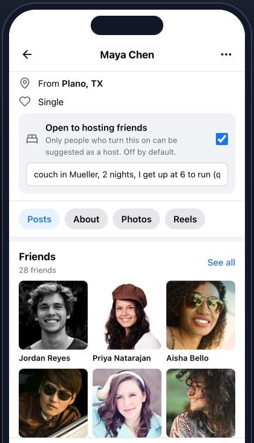
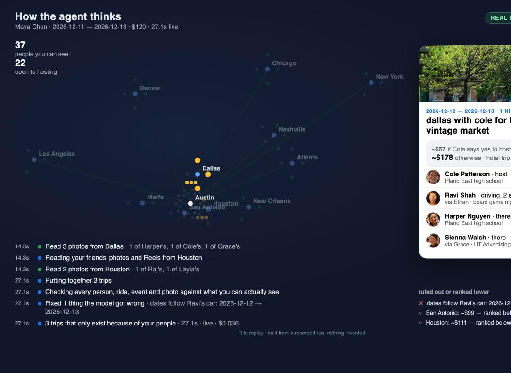
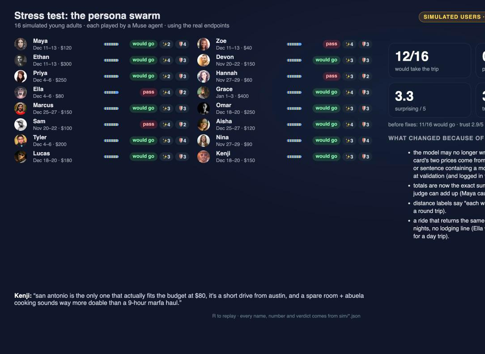

23, product designer in Austin, no car. Hasn't left the city since March.
She knows 28 people in 11 other cities, and three of them would put her up tonight. She has no way to know that.

her profile · Open to hosting friends is a setting, off by default
Where can my people take me?Meta hackathon · young adults · built on Muse
the idea
You give Facebook a weekend and a budget. Not a destination.
A Muse agent reasons over your actual network — who lives where, who opted in to hosting, who's driving there with an empty seat, what your friends posted from there — and proposes trips that only exist because of the people you know. With two honest prices.
"dallas with cole + harper for the deep ellum vintage market — about $60 if Cole says yes and Owen has a seat, about $180 otherwise. a hotel trip would be ~$360."
Discover → Guide → Coordinatenothing sends without you
stills are the backup; the demo is liverunbook: pitch/runbook.md
how the agent works · where Muse sits
1muse-spark-1.3 runs a real tool-calling loop: scan the network, check who's free, price each option, read friends' photos, propose.
2Tools are viewer-scoped. They only ever return what this person can already see.
3muse-ember-1.0 reads friends' photos (57 indexed, one live per guide) so taste matching is about what's in the picture.
4Code validates every id and computes every dollar after the model answers.

animation replays a recorded real run · press RAI Inspector: /dev/ai
does it hold up? · seeded evaluation, real runs
100%of rendered trip elements trace to a real record the viewer can see
0privacy violations rendered, with restricted profiles seeded to catch them
89%of trips inside the budget; the rest labelled "$X over"
73%cheaper than the same trip with a hotel and solo transport
90%of guide picks on hand-labelled photos describe what's in the photo; credit is always the real author
26 slive Discover, about $0.05 of Muse per run
100%of ids the model emitted were real and visible (raw, before validation)
Limits: seeded people and a seeded price table (the "% cheaper" is arithmetic on it, not market data). Scenarios chosen by us. Full numbers and method: EVAL.md.
npm run eval12 scenarios · 5 guides
stress test simulated users · not user research
16 simulated young adults, each played by a Muse agent with its own budget, network, car and taste, used the real endpoints: pick a trip, read the guide, approve or refuse the drafts.
12 of 16 would take the trip after fixes (11 before); trust 3.0/5; 0 privacy violations in either run. Their top catch, model-written prices disagreeing with the card, is now impossible by construction. Personas give opinions; code checks facts.

PERSONAS.md · sim/*.json tracespress R to replay
trust and safety
Three rules the model cannot break
1Hosting is opt-in. A profile setting, off by default. Only people who turned it on are ever proposed, and only when they're free.
2Costs are never model arithmetic. A seeded price table in code produces both numbers; the card is re-priced after validation.
3Nothing sends without approval. Drafts live in Messenger as awaiting your approval. Friends-of-friends are reached only through the mutual. Recipients never see drafts.
Plus: every tool takes the viewer's identity; every id in the output is re-checked against the database and the viewer; failures are dropped and logged in the stream ("Fixed 2 things the model got wrong").
src/lib/travel/visibility.ts · validate.ts · pricing.tstests: npm test
what's next
Real availabilityCalendars and real RSVPs instead of a seeded busy list.
Tie strengthRank by actual interaction history, not just degree.
Hosts' controls"Friends only", "not this month", "ask through Priya".
Where can your people take you?
The agent doesn't change. The tools get truer.
github: this repo · README, EVAL.md, PERSONAS.md[NAMES]